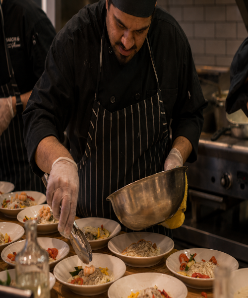
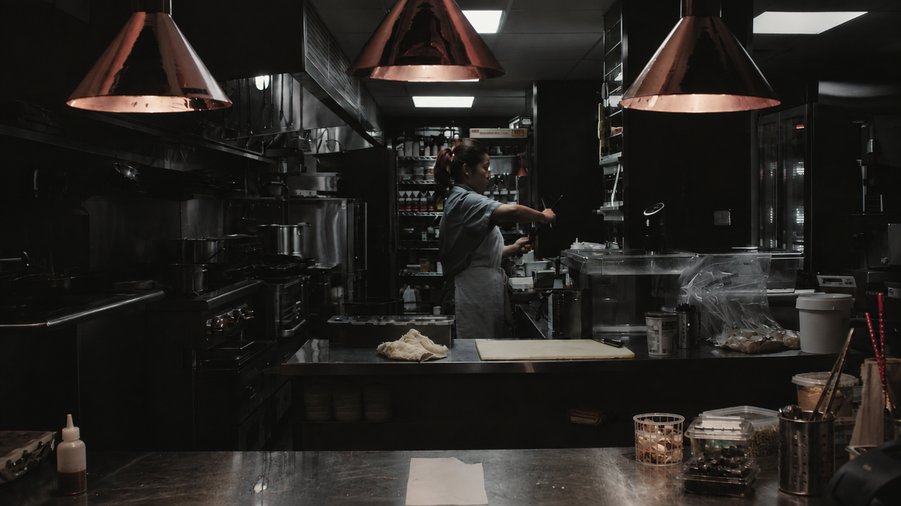

SOBRE O SABOR & ARTES
Nascemos da vontade de aproximar pessoas através da comida, celebrando ingredientes locais, técnica e a criatividade que só uma mesa partilhada inspira.
2026
Desde

Em 2017, no coração de Luanda, começámos com uma ideia simples: criar um lugar onde a comida tivesse tempo, intenção e memória.
O Sabor & Artes cresceu entre ingredientes locais, técnicas aprendidas em muitas cozinhas e a vontade de transformar cada refeição num encontro. Aqui, tradição e criatividade cozinham lado a lado.
Mais do que servir pratos, gostamos de reunir pessoas à mesa — porque é ali que os dias ganham sabor.
“Comida boa aproxima pessoas.”
OS NOSSOS VALORES
01
Valorizamos produtos frescos,
selecionamos com respeito pela estação e
por quem os cultiva
02
Criamos pratos onde técninca,memória e
criatividade encontram o seu ponto de equilibrio.
03
Queremos que cada pessoa se sinta
acolhida, confortável e verdadeiramente
esperada.
04
Respeitamos os ingredientes, os processos
e o momento certo de cada refeição.